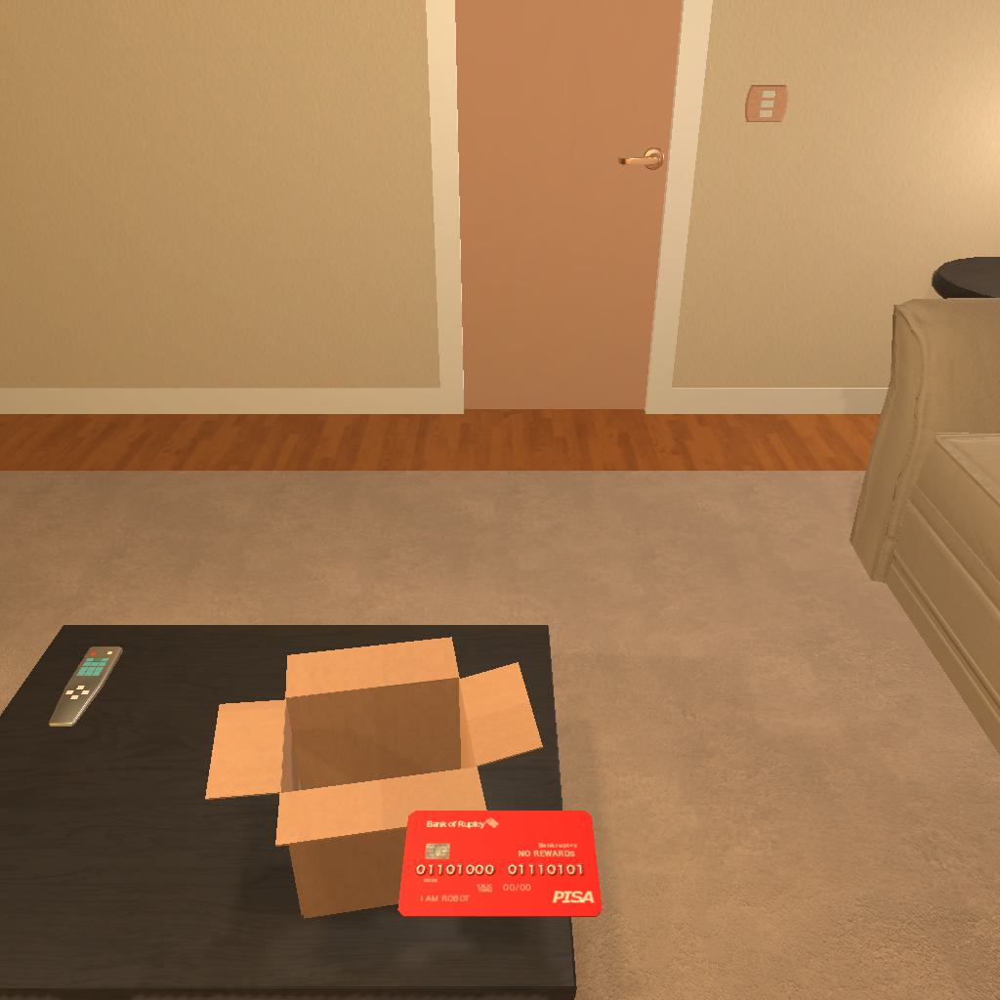

---------------------------------------------------------task: 7---------------------------------------------------------
--------------------------------------------------------------------------------------------------------------------------------------------------------------------
--------------------------------------------------------------------------------------------------------------------------------------------------------------------
Step:--------------------------------------------------------------------------8-------------------------------------------------------------------------------
----------------------------------------
VLM Prompt:
Image1:
Image2:
Image3:
**Instruction**
1. Analyze the provided images to identify all visible household objects and compare the difference between images (e.h. whether the object is opened or not and taken on hand or not), focusing on those relevant to the task description "put a creditcard in coffeetable."
2. Use the analysis of images and the task hint "The agent must find an object of the desired type, pick it up, find the correct location to place it, and put it down there." to answer the question: what is the most reasonable action in the choices for the task description "put a creditcard in coffeetable"?
3. Decide and write the answer using the template: The answer is: (i): , where i is the real number. If there is no desired object in images, search every place based on **Initial Observation** to find the object. And if no one is exactly correct, choose a similar answer.
**Initial Observation**
You are in the middle of a room. Looking quickly around you, you can see armchair (1-2), dresser (1), garbagecan (1), cabinet (1-4), drawer (1-4), coffeetable (1), sidetable (1), sofa (1)
**Answer Choices**
(1): go to armchair 1
(2): go to armchair 2
(3): go to dresser 1
(4): go to garbagecan 1
(5): go to cabinet 1
(6): go to drawer 1
(7): go to drawer 2
(8): go to cabinet 2
(9): go to drawer 3
(10): go to cabinet 3
(11): go to drawer 4
(12): go to cabinet 4
(13): go to sidetable 1
(14): go to sofa 1
(15): put creditcard 2 in/on coffeetable 1
(16): examine creditcard 2
(17): examine coffeetable 1
**Answer**
Let's think step by step by following the instructions.
----------------------------------------
----------------------------------------
Original Response:
First, we analyze the images provided:
Image1 and Image2 are identical, showing a sidetable with a lamp and a creditcard on it. The creditcard is not being held and is not on the coffeetable.
Image3 shows a different angle of the room with a coffeetable, which has a cardboard box on it but no creditcard. The creditcard is not present in this image either.
Now, based on the task description "put a creditcard in coffeetable," we can see that the creditcard is currently on the sidetable, not the coffeetable. So, the agent needs to pick up the creditcard from the sidetable and place it on the coffeetable.
Using the task hint, the agent must first find the creditcard, which is visible on the sidetable in Image1 and Image2. Then, the agent must pick it up and find the coffeetable to place it there.
Considering the initial observation and the analysis above, the most reasonable action from the choices would be to first go to the sidetable, pick up the creditcard, and then place it on the coffeetable.
However, there is no option to pick up the creditcard from the sidetable. The closest action to the correct sequence is to put the creditcard already in hand onto the coffeetable, but since the agent has not picked up the creditcard yet, this action is premature.
Since we need to find the creditcard first and it is located on the sidetable, and there is no direct action to pick up the creditcard from the sidetable, we should choose the action that involves the sidetable.
The answer is: (13): go to sidetable 1
----------------------------------------
----------------------------------------
>>> Refine Original VLM Response and Get Pure Action: go to sidetable 1
----------------------------------------
-----------------------------------------------------------------
Running time: 12.622498989105225 seconds
Total Money: 3.1634800000000007
-----------------------------------------------------------------
-----------------------------------------------------------------
Text Observation:You arrive at loc 13. On the sidetable 1, you see nothing.
-----------------------------------------------------------------
UNSUCCEED